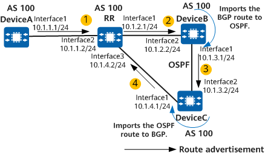

Example for Configuring BGP Routing Loop Detection
Networking Requirements
On the network shown in Figure 1, DeviceA, DeviceB, and DeviceC belong to AS 100. An IBGP peer relationship is established between DeviceA and the RR, between the RR and DeviceB, and between the RR and DeviceC. OSPF runs on DeviceB and DeviceC. DeviceB is configured to import BGP routes to OSPF, and DeviceC is configured to import OSPF routes to BGP. An export policy is configured on DeviceA to add AS numbers to the AS_Path attribute for the routes to be advertised to the RR. After receiving a BGP route from DeviceA, the RR advertises this route to DeviceB. DeviceB then imports the BGP route to convert it to an OSPF route and advertises the OSPF route to DeviceC. DeviceC then imports the OSPF route to convert it to a BGP route and advertises the BGP route to the RR. When comparing the route advertised by DeviceA and the route advertised by DeviceC, the RR prefers the one advertised by DeviceC because the AS_Path of the route advertised by DeviceA is longer than that of the route advertised by DeviceC. As a result, a stable routing loop occurs.
To avoid this problem, enable BGP routing loop detection on DeviceC. After BGP routing loop detection is enabled, DeviceC adds Loop-detection attribute 1 to the BGP route imported from OSPF and advertises the BGP route to the RR. After receiving this BGP route, the RR advertises it (carrying Loop-detection attribute 1) to DeviceB. As OSPF routing loop detection is enabled by default, when the BGP route is imported to become an OSPF route on DeviceB, the OSPF route inherits the routing loop attribute of the BGP route and has an OSPF routing loop attribute added as well before the OSPF route is advertised to DeviceC. Upon receipt of the OSPF route, DeviceC imports it to convert it to a BGP route. Because BGP routing loop detection is enabled, the BGP route inherits the routing loop attributes of the OSPF route. Upon receipt of the route, DeviceC finds that the routing loop attributes in the received route contain its own routing loop attribute and therefore determines that a routing loop has occurred. In this case, DeviceC generates an alarm, and reduces the local preference and increases the MED value of the route before advertising the route to the RR. After receiving the route, the RR compares this route with the route advertised by DeviceA. Because the route advertised by DeviceC has a lower local preference and a larger MED value, the RR preferentially selects the route advertised by DeviceA. This resolves the routing loop.
When the OSPF route is transmitted to DeviceC again, DeviceC imports it to convert it to a BGP route. At this point, the route carries only the OSPF routing loop attribute added by DeviceB. However, DeviceC still considers the route as a looped route because the route has a routing loop record. In this case, the RR does not preferentially select the route after receiving it from DeviceC. Then routes converge normally.

In this example, interface 1, interface 2, and interface 3 represent 10GE 0/0/1, 10GE 0/0/2, and 10GE 0/0/3, respectively.

To complete the configuration, you need the following data:
- IP addresses of devices A through C
- AS number of devices A through C
Precautions
During the configuration, note the following:
- To improve security, you are advised to deploy BGP security measures. For details, see "Configuring BGP Authentication." Keychain authentication is used as an example. For details, see Example for Configuring Keychain Authentication for BGP.
Configuration Roadmap
The configuration roadmap is as follows:
Configure IP addresses for interfaces.
Configure an IGP area and IBGP peers.
Configure route import on DeviceB and DeviceC.
- Configure an export policy on DeviceA to add AS numbers to the AS_Path attribute for the routes to be advertised to the RR. This configuration helps simulate a routing loop scenario.
Configure BGP routing loop detection on DeviceC.
Procedure
- Configure IP addresses for interfaces.
DeviceA is used as an example.
<HUAWEI> system-view [HUAWEI] sysname DeviceA [DeviceA] interface 10ge 0/0/1 [DeviceA-10GE0/0/1] undo portswitch [DeviceA-10GE0/0/1] ip address 10.1.1.1 24 [DeviceA-10GE0/0/1] quit
- Configure OSPF on DeviceB and DeviceC to implement interworking in the IGP area.
# Configure DeviceB.
[DeviceB] ospf 1 [DeviceB-ospf-1] area 0 [DeviceB-ospf-1-area-0.0.0.0] network 10.1.3.0 0.0.0.255 [DeviceB-ospf-1-area-0.0.0.0] quit [DeviceB-ospf-1] quit
# Configure DeviceC.
[DeviceC] ospf 1 [DeviceC-ospf-1] area 0 [DeviceC-ospf-1-area-0.0.0.0] network 10.1.3.0 0.0.0.255 [DeviceC-ospf-1-area-0.0.0.0] quit [DeviceC-ospf-1] quit
- Establish an IBGP peer relationship between DeviceA and the RR, between the RR and DeviceB, and between the RR and DeviceC.
# Configure DeviceA.
[DeviceA] bgp 100 [DeviceA-bgp] router-id 1.1.1.1 [DeviceA-bgp] peer 10.1.1.2 as-number 100 [DeviceA-bgp] quit
# Configure the RR.
[RR] bgp 100 [RR-bgp] router-id 2.2.2.2 [RR-bgp] peer 10.1.1.2 as-number 100 [RR-bgp] peer 10.1.2.2 as-number 100 [RR-bgp] peer 10.1.4.1 as-number 100 [RR-bgp] ipv4-family unicast [RR-bgp-af-ipv4] peer 10.1.2.2 reflect-client [RR-bgp-af-ipv4] quit [RR-bgp] quit
# Configure DeviceB.
[DeviceB] bgp 100 [DeviceB-bgp] router-id 3.3.3.3 [DeviceB-bgp] peer 10.1.2.1 as-number 100 [DeviceB-bgp] quit
# Configure DeviceC.
[DeviceC] bgp 100 [DeviceC-bgp] router-id 4.4.4.4 [DeviceC-bgp] peer 10.1.4.2 as-number 100 [DeviceC-bgp] quit
- Configure BGP to import static routes and direct routes.
# Configure DeviceA to import static routes.
[DeviceA] bgp 100 [DeviceA-bgp] ipv4-family unicast [DeviceA-bgp-af-ipv4] import-route static [DeviceA-bgp-af-ipv4] quit [DeviceA-bgp] quit
# Configure the RR to import direct routes.
[RR] bgp 100 [RR-bgp] ipv4-family unicast [RR-bgp-af-ipv4] import-route direct [RR-bgp-af-ipv4] quit [RR-bgp] quit
- Configure DeviceB to import BGP routes into OSPF.
[DeviceB] ospf 1 [DeviceB-ospf-1] import-route bgp permit-ibgp [DeviceB-ospf-1] quit
- Configure DeviceC to import OSPF routes into BGP.
# Configure DeviceC.
[DeviceC] bgp 100 [DeviceC-bgp] import-route ospf 1 [DeviceC-bgp] quit
- Configure route-policies.
# Configure DeviceA to add AS numbers to the AS_Path attribute for the routes to be advertised.
[DeviceA] route-policy ex1 permit node 10 [DeviceA-route-policy] apply as-path 700 8000 additive [DeviceA-route-policy] quit [DeviceA] bgp 100 [DeviceA-bgp] ipv4-family unicast [DeviceA-bgp-af-ipv4] peer 10.1.1.2 route-policy ex1 export [DeviceA-bgp-af-ipv4] quit [DeviceA-bgp] quit
- Configure a static route.# Configure DeviceA to simulate a looped route.
[DeviceA] ip route-static 10.7.7.7 255.255.255.255 NULL0
- Verify the configuration.
After the configuration is complete, check the BGP routing table on the RR. The command output shows that the RR has preferentially selected the route received from DeviceC and that a stable routing loop is formed. The route learned from DeviceA is not selected as the optimal route because it has a longer AS_Path than the route learned from DeviceC.
<RR> display bgp routing-table 10.7.7.7 BGP local router ID : 2.2.2.2 Local AS number : 100 Paths: 2 available, 1 best, 1 select, 0 best-external, 0 add-path BGP routing table entry information of 10.7.7.7/32: From: 10.1.4.1 (4.4.4.4) Route Duration: 0d00h00m10s Relay IP Nexthop: 10.1.4.1 Relay IP Out-Interface: GigabitEthernet0/0/3 Original nexthop: 10.1.4.1 Qos information : 0x0 AS-path Nil, origin incomplete, MED 1, localpref 100, pref-val 0, valid, internal, best, select, pre 255 Advertised to such 1 peers: 10.1.2.2 BGP routing table entry information of 10.7.7.7/32: From: 10.1.1.1 (1.1.1.1) Route Duration: 0d01h19m49s Relay IP Nexthop: 10.1.1.1 Relay IP Out-Interface: GigabitEthernet0/0/2 Original nexthop: 10.1.1.1 Qos information : 0x0 AS-path 700 8000, origin incomplete, MED 0, localpref 100, pref-val 0, valid, internal, pre 255, not preferred for AS-Path Not advertised to any peer yet
- Configure BGP routing loop detection.
# Configure DeviceC.
[DeviceC] route loop-detect bgp enable
Verifying the Configuration
After BGP routing loop detection is configured, DeviceC determines that the received route 10.7.7.7 is a looped route. Therefore, DeviceC reduces the local preference and increases the MED value of the route before advertising the route to the RR. After receiving the route, the RR compares this route with the route advertised by DeviceA. Because the route advertised by DeviceC has a lower local preference and a larger MED value, the RR preferentially selects the route advertised by DeviceA. This resolves the routing loop.
# Display the BGP routing table of the RR.
<RR> display bgp routing-table 10.7.7.7 BGP local router ID : 2.2.2.2 Local AS number : 100 Paths: 2 available, 1 best, 1 select, 0 best-external, 0 add-path BGP routing table entry information of 10.7.7.7/32: From: 10.1.1.1 (1.1.1.1) Route Duration: 0d01h21m03s Relay IP Nexthop: 10.1.1.1 Relay IP Out-Interface: GigabitEthernet0/0/2 Original nexthop: 10.1.1.1 Qos information : 0x0 AS-path 700 8000, origin incomplete, MED 0, localpref 100, pref-val 0, valid, internal, best, select, pre 255 Advertised to such 1 peers: 10.1.2.2 BGP routing table entry information of 10.7.7.7/32: From: 10.1.4.1 (4.4.4.4) Route Duration: 0d00h00m09s Relay IP Nexthop: 10.1.4.1 Relay IP Out-Interface: GigabitEthernet0/0/3 Original nexthop: 10.1.4.1 Qos information : 0x0 AS-path Nil, origin incomplete, MED 4294967295, localpref 0, pref-val 0, valid, internal, pre 255, not preferred for Local_Pref Not advertised to any peer yet
Configuration Scripts
DeviceA
# sysname DeviceA # interface 10GE0/0/1 ip address 10.1.1.1 255.255.255.0 # bgp 100 router-id 1.1.1.1 private-4-byte-as enable peer 10.1.1.2 as-number 100 # ipv4-family unicast undo synchronization import-route static peer 10.1.1.2 enable peer 10.1.1.2 route-policy ex1 export # route-policy ex1 permit node 10 apply as-path 700 8000 additive # ip route-static 10.7.7.7 255.255.255.255 NULL0 # return
- RR configuration file
# sysname RR # interface 10GE0/0/1 ip address 10.1.2.1 255.255.255.0 # interface 10GE0/0/2 ip address 10.1.1.2 255.255.255.0 # interface 10GE0/0/3 ip address 10.1.4.2 255.255.255.0 # bgp 100 router-id 2.2.2.2 private-4-byte-as enable peer 10.1.1.1 as-number 100 peer 10.1.2.2 as-number 100 peer 10.1.4.1 as-number 100 # ipv4-family unicast undo synchronization import-route direct peer 10.1.1.1 enable peer 10.1.2.2 enable peer 10.1.2.2 reflect-client peer 10.1.4.1 enable # return
DeviceB
# sysname DeviceB # interface 10GE0/0/1 ip address 10.1.3.1 255.255.255.0 ospf enable 1 area 0.0.0.0 # interface 10GE0/0/2 ip address 10.1.2.2 255.255.255.0 # bgp 100 router-id 3.3.3.3 private-4-byte-as enable peer 10.1.2.1 as-number 100 # ipv4-family unicast undo synchronization peer 10.1.2.1 enable # ospf 1 import-route bgp permit-ibgp opaque-capability enable area 0.0.0.0 network 10.1.3.0 0.0.0.255 # return
DeviceC
# sysname DeviceC # interface 10GE0/0/1 ip address 10.1.4.1 255.255.255.0 # interface 10GE0/0/2 ip address 10.1.3.2 255.255.255.0 ospf enable 1 area 0.0.0.0 # bgp 100 router-id 4.4.4.4 private-4-byte-as enable peer 10.1.4.2 as-number 100 # ipv4-family unicast undo synchronization import-route ospf 1 peer 10.1.4.2 enable # route loop-detect bgp enable # ospf 1 opaque-capability enable area 0.0.0.0 network 10.1.3.0 0.0.0.255 # return